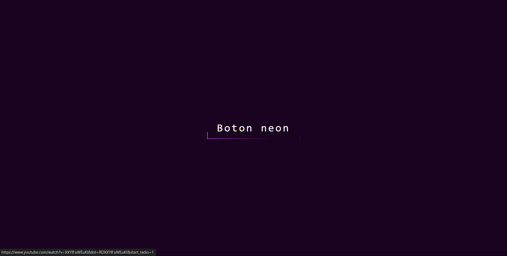
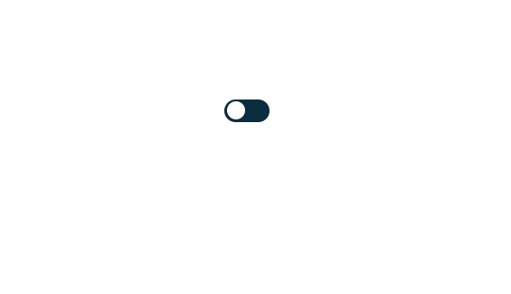

Mi nombre es Cristopher Estuardo Agustin Cortez tengo 17 años
por el momento, el día 17 de Febrero del presente año
cumplieré los 18 años de edad, he estudiado
programación ya que me ha gustado desde el día que supe que existia,
he estado aprendiendo poco a poco por varios años
sé algunos lenguajes de programación
basicos como: Java, JavaScrip, Python, Html, Css.
He estado llevando a cabo proyectos de programación y desarrollo web
incluyendo diseño de página con marketing,
el día de hoy vengo a demostrar algunos de ellos para quienes interesen para que me contacten a futuro. Curriculum
| Proyecto 1 |
Proyecto 2 |
Proyecto 3 |
Estos proyectos fueron hechos por mi, cuando recien empezé
a aprendre HTML con CSS. Me han gustado tanto que quiero compartirles
mis proyectos en que he estado trabajando, son proyectos individuales por ejemplo
botones, registros, modos y/o animaciones y algunas son:
Ingresar |
Botón |
Botón Animado |
|  Botón Neón |
Botón Switch |
 Dark Mode |